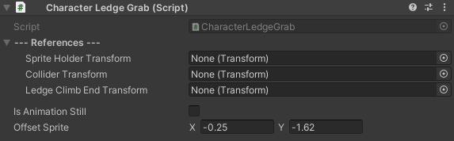

CharacterLedgeGrab
SWITCH TO SCRIPTINGOverview
The CharacterLedgeGrab provides functionality for handling ledge grabbing and climbing behaviors for characters in a Unity project.
It allows characters to grab onto ledges and climb up to reach higher areas.
To utilize the component in your Unity project, proceed by attaching the script to the root object of your character in the Unity Editor,
and then configure the parameters exposed in the Inspector to customize the ledge grab and climb behaviour as per your requirements.
Note that the CharacterLedgeGrab requires a Rigidbody2D
component for proper operation. Attaching the script to your character object will automatically add this required component.
Inspector
| SpriteHolderTransform |
The transform of the parent object that holds the GameObject with the SpriteRenderer component attached.
The object containing the SpriteRenderer should always be nested under an empty parent object. This arrangement is essential because the CharacterLedgeGrab's effects impact the position of this object, while the SpriteRenderer's position should remain unaffected. |
| ColliderTransform |
Transform of the character's vertical collider.
If you do not intend to offset the collider's position when the character is grabbing a ledge, you can leave this field empty. |
| LedgeClimbEndTransform | A Raycast will be fired downward to determine the precise location where the character should be positioned after performing the ledge climb. |
Tied properties
| IsAnimationStill |
True, if all frames of the Ledge Climb animation are at the same position. False, if the frames of the Ledge Climb animation vary in position.
This boolean property determines the behaviour of character movement in relation to the animation. When set to true, indicating a static sprite sheet, the character object will be moved by the code for the duration of the animation. In contrast, when set to false for a dynamic sprite sheet, the code will wait for the animation to complete, after which it will teleport the character object to the position of the last frame of the animation. Setting this property to true will enable the 'LedgeClimbSpeed' property in the inspector as well. |
| LedgeClimbSpeed |
How fast should the character climb off a ledge.
This property will determine the speed at which the character will reach the position at the top of the ledge, starting from the frame the ledge was detected. This property will be hidden from the inspector, if the 'isAnimationStill' property is set to false. |
| OffsetSprite |
Your character is expected to be offseted. Adjust this value to set it back to the intended position.
Once a ledge is detected, the 'SpriteHolder' will automatically be teleported to the position of the ledge. This ensures that no matter where the character is in relation to the ledge when it's detected, the sprites will always have a default starting position relative to the edge. Adjusting the offset will ensure that every time your character hits a ledge, they will be positioned correctly. Note that the actual position of the character object, will not be affected. |
| OffsetColliderHeight | Offset the character's collider if it doesn't correspond to the player's position. |